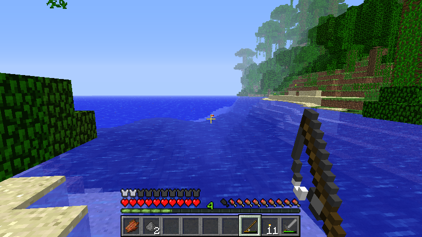

Working With Food
1. There are many foods. Some are easy to get and some are hard to get. Here are some basic foods that is the most common. Before I tell you the foods, you need to know: you have food points. If you run out if food points, then you lose health until you die. Cooked foods give you nore food points than non-cooked food. To cook food, you need a furnace (see crafting to know how to craft a furnace). 2. The easiest food to find is meat. you get it by killing animals. If you don't want to kill animals then get fruits and vegtables(see gardening to get them). If you don't have a garden, then go fishing. 3. To go fishing, you need to make a fishing rod. To make it, fill in the 3rd row with sticks. Place a stick in the middle, then place a stick on the left bottom corner. To fish, throw your bobber out. When you see a stream of bubbles apear close to your bobber, get ready. When the bobber goes down, immediently pull your bobber up. You should get fish. If your lucky, you will get another item. If you get fish, then cook it in your furnace. Then, you will get cooked fish! 